quisseh
Hi there. My name is quisseh.I make software, especially video games.
Alaska Itinerary
A twelve-day adventure through Alaska
Day 1 (2016-08-13)
We departed mid-afternoon on an 8-hour flight.
Landed in Anchorage, Alaska on time. Ran downstairs to the Alamo desk to pick up our rental car. Fairly quick/painless process. Drove to the nearby Holiday Inn Express and checked in. Place was charming/clean, room seemed recently renovated.
After settling in, we drove to Samurai Sushi for dinner. Decent vegetarian sushi, but excellent vegetable tempura and miso soup.
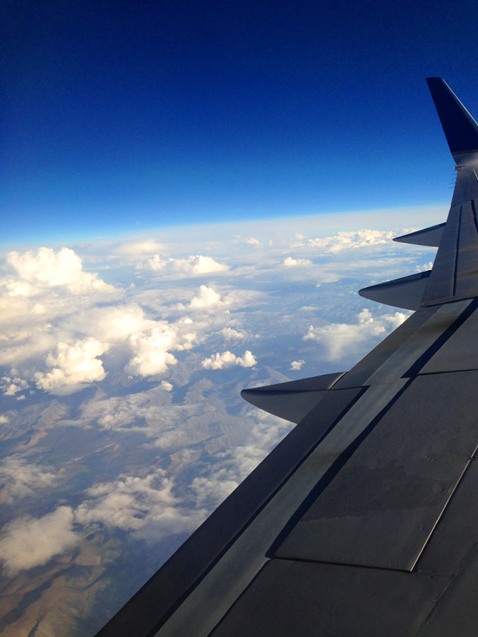Day 2 (2016-08-14)
Drove to grocery store to get fruit/nuts/granola to take with us for hiking.
Visited the Potter Marsh Bird Sanctuary. Crossed all of the boardwalk paths. Gorgeous views. Saw magpies for the first time. Found a small school of salmon swimming upstream.
Drove to Kincaid Park for a short hike. On the way we saw a bull moose grazing alongside the highway. He was majestic.
Hiking at Kincaid Park was pleasant/quiet. On the way back we saw a cow moose and her two calves. We were screaming. They were beautiful.
Went to Moose's Tooth for dinner. Food smelled better than it tasted. Our roasted vegetable pizzas were covered in whole cloves of garlic. Wasn't worth the 45-minute wait.
Walked off our dinner at the Tony Knowles Coastal Trail. Great views. Learned about the 1964 Alaska earthquake and the changes it made to the landscape. My wife slipped on a slick clay mound and nearly fell off a cliff.
Another night at the Holiday Inn Express.
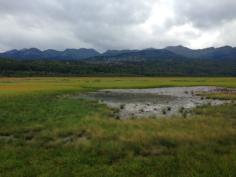 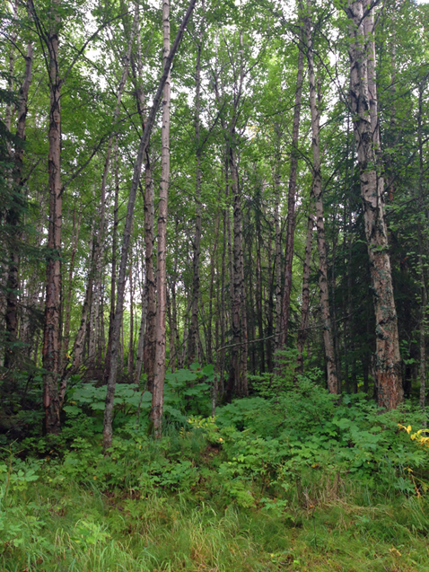 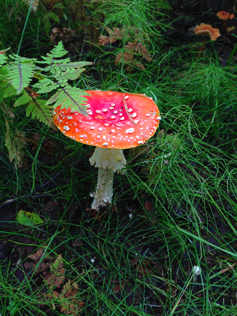Day 3 (2016-08-15)
Got up early and headed northeast about 2 hours to the Matanuska Glacier. This was an entertaining drive; much of the winding highway runs along cliffsides with magnificent mountain views.
Went on an all-day ice climbing trip with MICA Guides, which turned out to be an incredible experience. By the end of the day we had hiked 6 miles across the glacier and completed 4 climbs into deep crevasses/moulins. Our guide was fun/knowledgeable. Highly recommended.
That evening we stayed at the Alpenglow campsite next door to MICA Guides. Tent was spacious, bed was comfy.
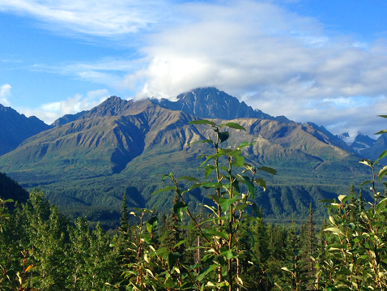 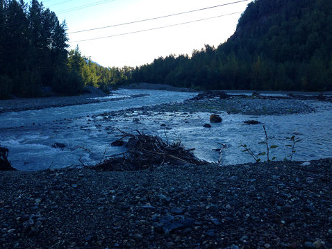 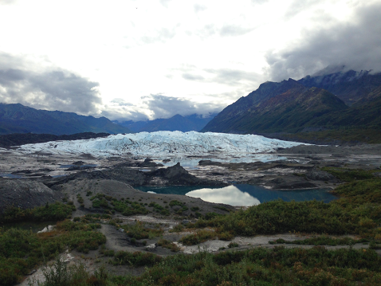 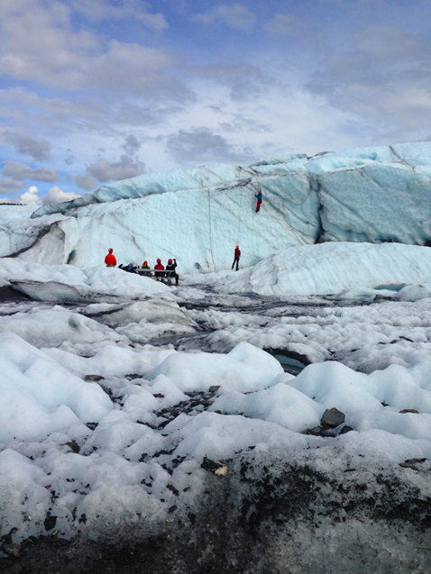 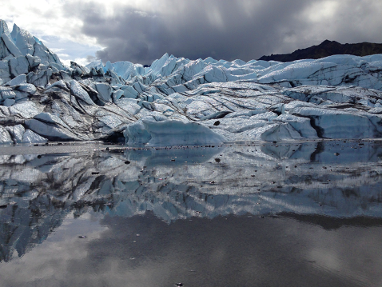 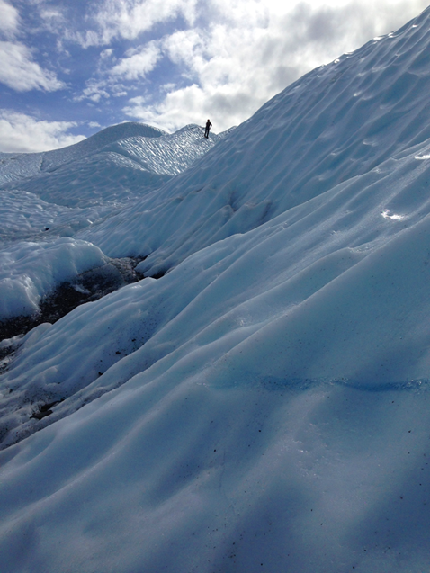 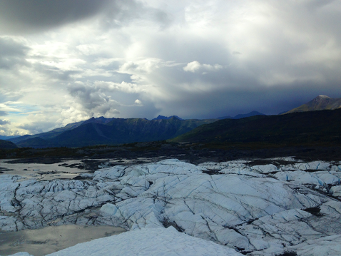 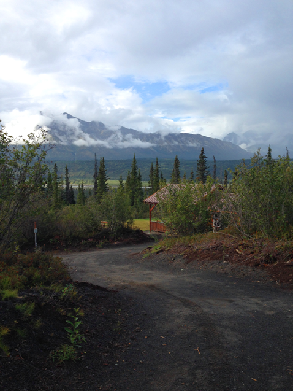 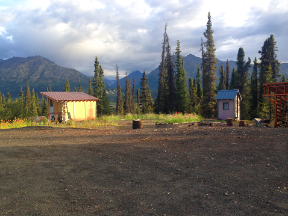 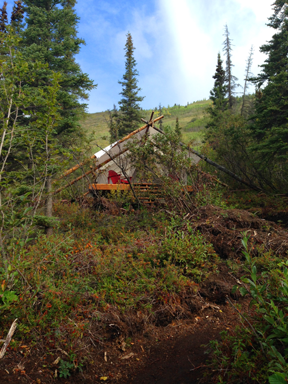Day 4 (2016-08-16)
Woke up with the sun.
Short drive down the road to Glacier View Adventures for zip-lining over the Matanuska River. Took a small hike up to the platform, then went flying at 60 miles per hour over 250 feet in the air. Fantastic.
Our next destination was Homer, so we started heading southwest toward the Kenai Peninsula. Stopped at Beluga Point about 2 hours in. Beautiful ocean views and a soft clay beach. Massive rocks to climb.
4 hours later we were in Homer. Yet another gorgeous drive with panoramic views of the Gulf of Alaska.
Most restaurants were closed by the time we got here, so we had to improvise. We tried Wasabi's. Sushi was tasteless/overpriced. Don't eat sushi there.
Spent the night at the Driftwood Inn. Our room was about the size of a walk-in closet, had not been updated since the 1970s, and smelled like cough medicine. Wouldn't recommend it.
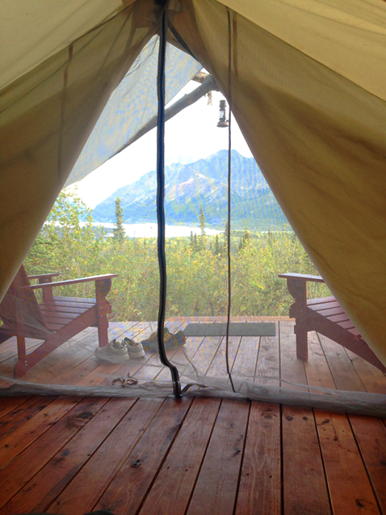 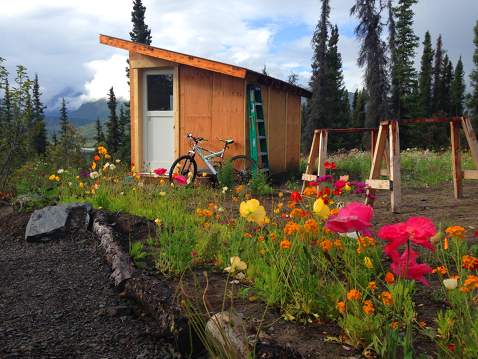 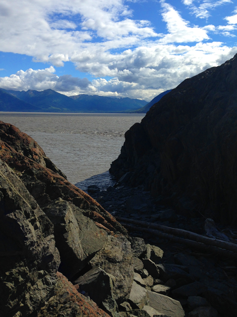Day 5 (2016-08-17)
A day to explore Homer.
Breakfast at Two Sisters Bakery. Had an excellent raspberry streusel bar. Went down to Bishops Beach, walked along the shore. Saw our first bald eagle. Handsome/distinguished.
Went to the Alaska Islands & Ocean Visitor Center. Walked through a fascinating exhibit on Alaska's history, the native Aleutian people, and how fur trade, oil extraction, and war eradicated plant/animal life across the state.
Drove to the lovely Homer Spit. Liveliest place we had seen in Alaska. Walked around the cute little shops. Skipped rocks into the bay. Views from this spot are unbelievable.
Ate lunch at la baleine cafe. We both ordered THE SEASALT sandwich. If you go to Homer, you need to have this sandwich. For dinner we went to Vida's Thai Food. Had pineapple tofu vegetable stir-fry. Food was excellent.
Another night at the Driftwood Inn.
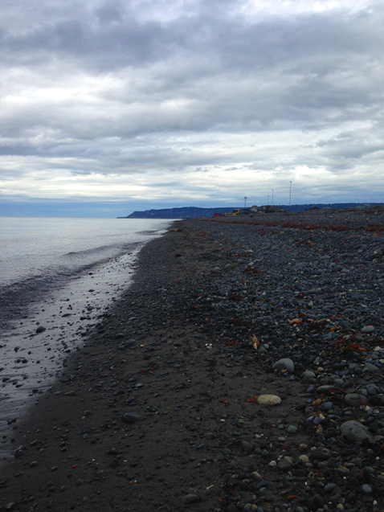 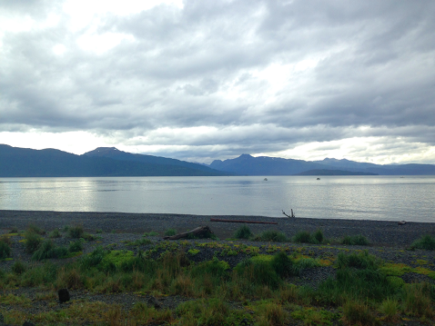
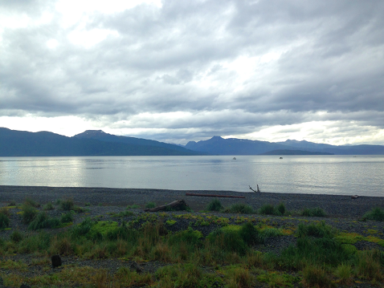
Day 6 (2016-08-18)
An early 3-hour drive around the Kenai Peninsula to Seward. Nice views of the deep blue Kenai River along the way.
Seward turned out to be our favorite city in Alaska. Lots to do/see, very walkable, and surrounded by mountains/bays.
Fast breakfast at Sea Bean Cafe. Had the best oatmeal of our lives. Eat oatmeal here.
Main event for the day was a 5-hour wildlife cruise with Major Marine Tours. This was a great time. They took us through Resurrection Bay and out to the Gulf of Alaska. We saw sea otters, bald eagles, puffins, sea lions, humpback whales, and a mountain goat. Dramatic cliffsides filled with evergreens. A clear view of Bear Glacier. Scenery was incredible.
Went to Woody's Thai Kitchen for dinner. Had garlic tofu fried rice. Food was okay but greasier than it needed to be.
Stayed at the Breeze Inn. Location was excellent, right in the middle of everything. Room was fine. Hotel receptionists were a bit nutty.
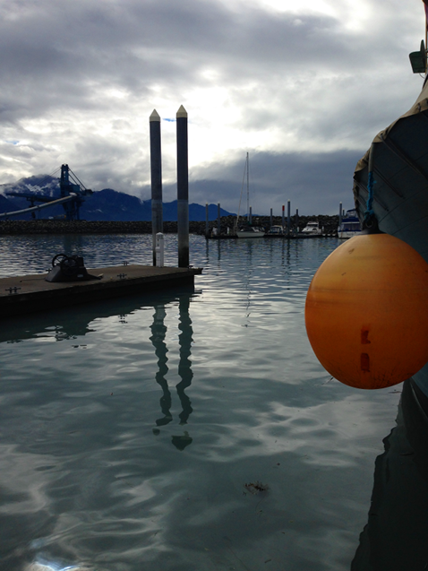 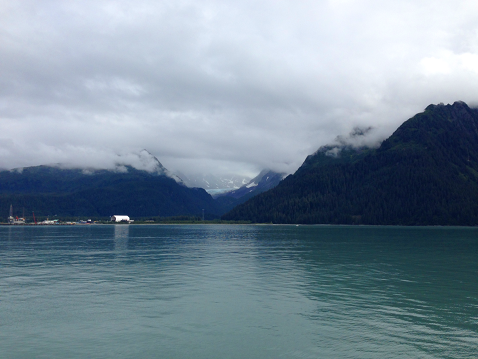 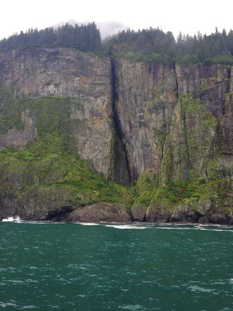 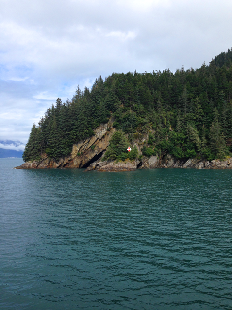 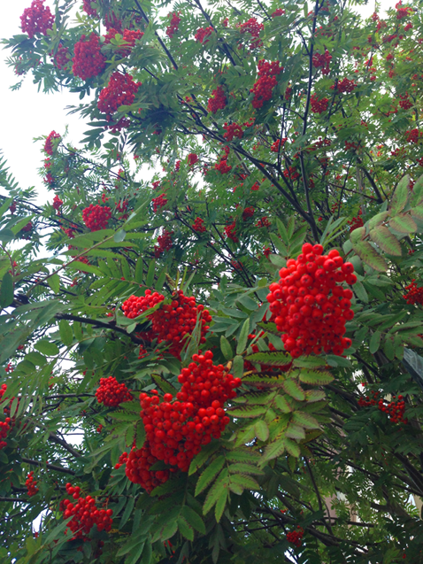Day 7 (2016-08-19)
Early morning kayaking trip on Resurrection Bay with Kayak Adventures Worldwide. Kayaking was fun. Our guide was entertaining. We saw bald eagles and sea otters. Spotted a few porpoises following us. Stopped at a small beach and headed inland to find a gorgeous 90-foot waterfall.
Spent the rest of the day exploring Seward. Walked around the little shops, marina, and rocky shore.
Had lunch at Sea Bean Cafe. Dinner at Peking. This was, officially, the freshest, best-tasting Chinese food we have ever eaten. We both ordered tofu and mixed vegetables in a spicy peanut sauce. I'm afraid I will never have Chinese food quite like this again. I personally thanked the owner for our dinner.
Another night at the Breeze Inn.
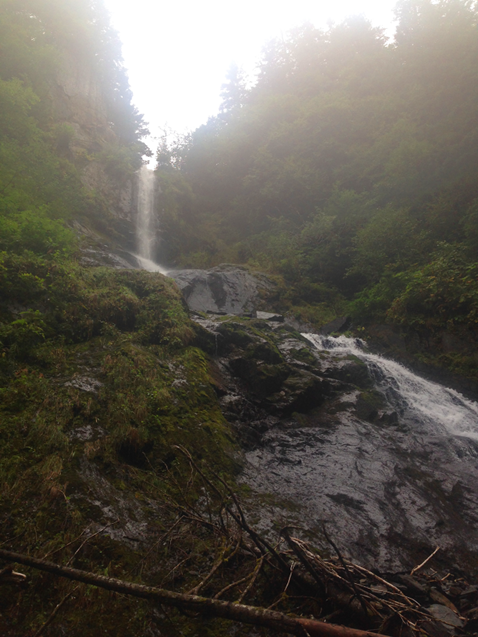 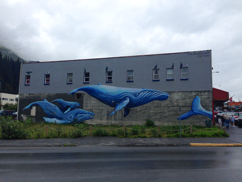Day 8 (2016-08-20)
A day of hiking at the Kenai Fjords National Park. Just a short drive outside the Seward city center.
First hiked up to Exit Glacier, which was a magnificent sight. Then went down to the outwash plain at the toe of the glacier: a series of meandering streams and frozen glacial silt. Everything was sparkling. Finally, we took the Harding Icefield Trail up the mountain. This was a steep hike, gaining about 1000 feet of elevation per mile. It took us through thick forests, sharp cliffsides, and a succession of waterfalls. We stopped a few miles in to take in the view.
Next stop was Anchorage. About a 3-hour drive. Plan was to spend the night there and load up on food for our next destination: Denali National Park. We stayed at the Marriott in Downtown Anchorage. Our room was nice/clean with a fantastic view of the city.
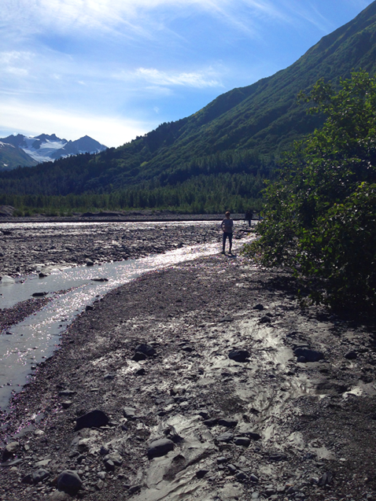 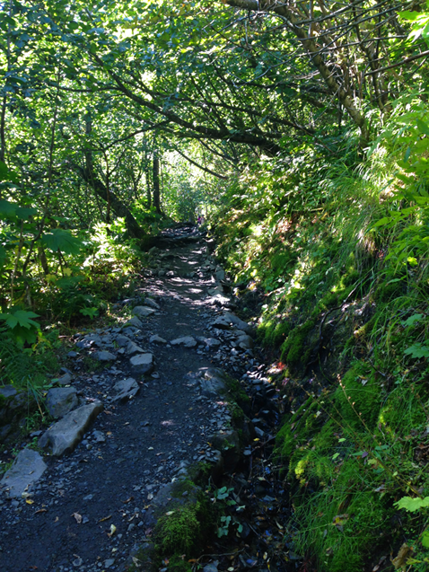
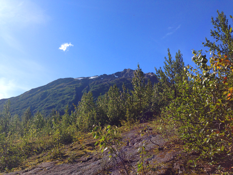
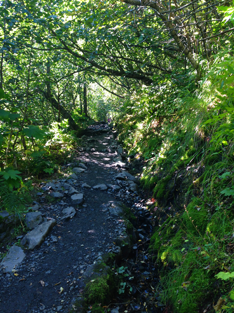
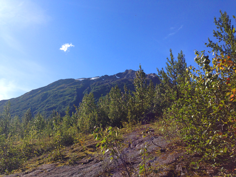
Day 9 (2016-08-21)
Bright and early with a 5-hour drive headed north to Denali. Don't get caught with low gas on this route; there's a 100-mile stretch with no gas stations. We made this mistake.
Hiked at the lengthy Triple Lakes Trail. A bit tricky to find but worth the effort. About 9 miles running alongside 3 beautiful consecutive lakes. Narrow winding paths lined with wild berry bushes; blueberries and lingonberries everywhere. Very relaxing walk.
After the hike we checked in to the nearby Crow's Nest Cabins. Charming cabins lined up along a cliffside. Nice view, close to the park, and within walking distance of a number of shops/restaurants.
Went to the Black Bear Coffee House and had a fantastic dinner. Ordered grilled vegetable tacos with rice and black beans on the side. Shocked at the massive portion size. Coffee is great too.
Walked around the surrounding area before heading back to the cabin.
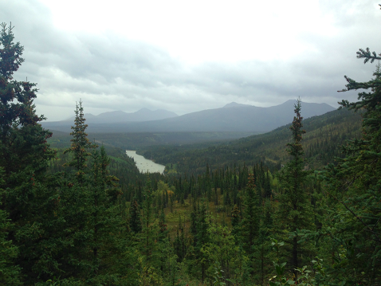 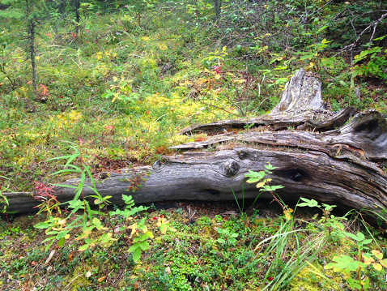 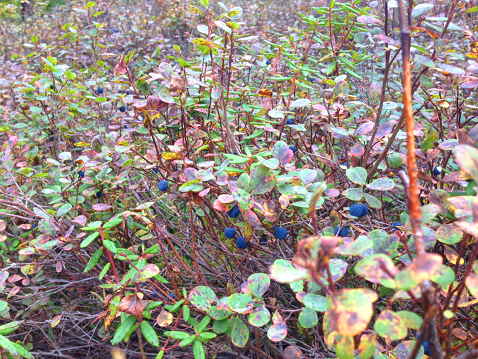Day 10 (2016-08-22)
Took the hotel shuttle over to the Denali Visitor Center. There are a number of neat exhibits here that delve into the geology/ecology of the park. Waited here for the Savage River Shuttle to take us further in.
On the drive to Savage River we saw several caribou and incredible views. When we arrived, we headed for the Savage Alpine Trail. This was by far the best hike we went on. 4 miles one way, 1500-foot elevation gain. Surprising variety of vibrant flora. Jagged cliffs inhabited by shouting arctic ground squirrels. At the first peak of the climb we finally caught a glimpse of Denali. We took a break, looking in every direction at the vastness of everything.
From here the climb intensified. I had never before experienced crosswind so strong/persistent. I could lean my back against the wind and remain suspended. Each step required care to avoid being knocked over. This was an extraordinary feeling.
Eventually we reached our limit and headed back satisfied. Paid another visit to the Black Bear Coffee House for dinner, then back to the Crow's Nest Cabins for the night.
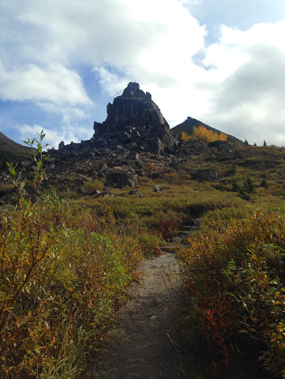 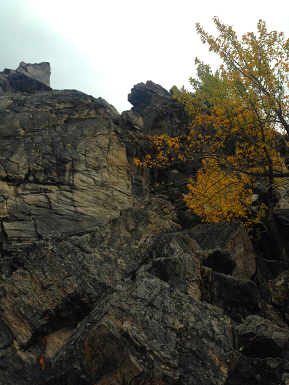 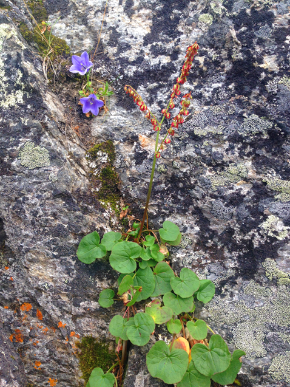 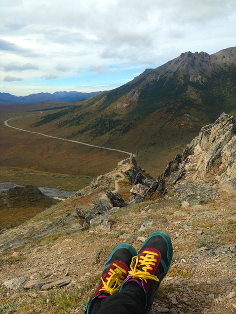 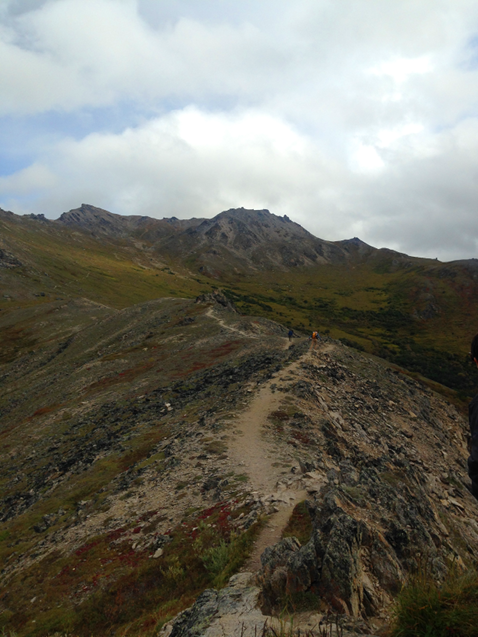 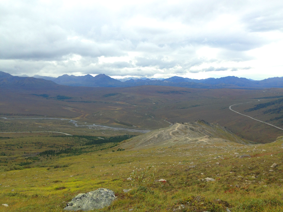Day 11 (2016-08-23)
A third visit to the Black Bear Coffee House; this time for breakfast. Hummus bagels and coffee.
Returned to Denali Visitor Center to stroll around the small trails in the area. Eventually made our way to the back end of Triple Lakes Trail. Immediately after crossing the bridge over Riley Creek, we froze; 15 feet ahead of us, around a bend, was a grizzly bear digging up roots. Enormous, beautiful animal. Somehow we went unnoticed and were able to back away safely. Wish we could've spent some time quietly observing.
It was time for a 5-hour drive south to Anchorage. Upon arrival, we returned the rental car to Alamo and checked in to the Holiday Inn Express. Ordered decent delivery food from China Garden and watched National Geographic until we fell asleep. Relaxing night.

Day 12 (2016-08-24)
Early connecting flight with a stop in Seattle, Washington. We had a 3-hour layover and wanted to make the most of it. Sprinted to the Link light rail as soon as we landed and got on. Stopped at the Chinatown-International District. Explored for a bit, then found ourselves at Tsukushinbo, where we had some of the best sushi we had ever eaten. We ordered the Garden Roll and Crunchy Veggie Roll.
Got back on the train, then ran to our gate just in time for the flight home.
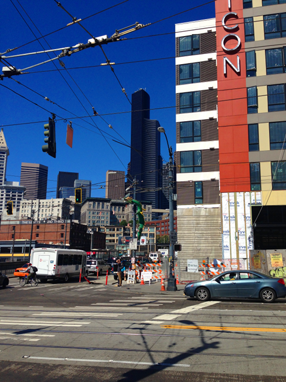Some closing comments
All restaurants mentioned above were able to accommodate a vegan diet (some with minor menu adjustments).
Jeans/t-shirt/light jacket were appropriate attire for most weather we encountered. Only on mountains/glaciers did we need to put on heavier/waterproof layers.
We drove a total of 24 hours across the great state of Alaska. Having quality driving music is important. We like Modest Mouse, especially This Is a Long Drive for Someone with Nothing to Think About.